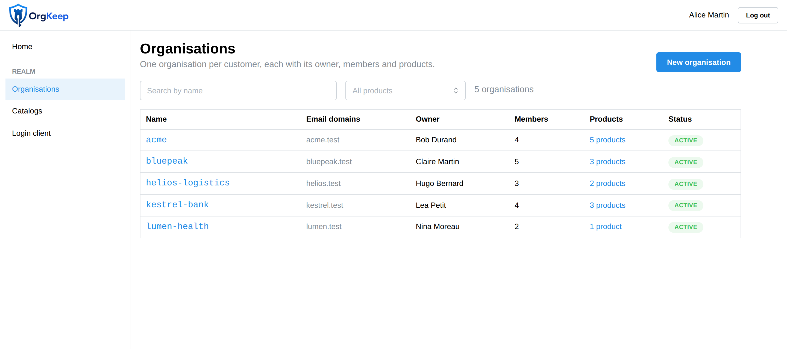

Multi-tenant B2B on Keycloak,
without customizing Keycloak
Your customers are organisations. Orgkeep gives each of them its own admins, members and teams, sells them the products of your catalog with features and quotas, and puts it all in the tokens your APIs already read.
Open source, Apache 2.0 · Early preview (0.x) · Java 25, Quarkus, Keycloak 26


How it works
Keycloak 26 knows organisations. Orgkeep adds what a B2B company needs around them.
-
1
You create an organisation per customer
One call: the organisation, its email domains, its owner (invited by email), its predefined roles and groups.
-
2
You assign it products from your catalog
What it negotiated: the features it bought, a quota per metered feature, the values of its parameters.
-
3
Its admins run their own teams
They invite their colleagues and share out the products of their organisation, without asking you.
What you get
Delegated org admins
Owners, admins and members per organisation. An org admin manages members and teams of their own organisation, and nothing else.
A catalog of products
Your APIs as products, grouped in catalogs (prod, sandbox...). Each product has features, some of them metered, and a schema of parameters.
Quotas in the token
The quota of the organisation, and of a team if it has its own budget. Orgkeep does not count the usage: your API keeps its counters.
No Keycloak extension
Rights are written on Keycloak groups and come out through its native mappers. Keycloak stays a plain Keycloak you can upgrade.
Lightweight tokens
Tokens too big for your proxies? One switch: tokens of constant size, and your APIs read the rights by introspection.
White label
Nothing in the login pages, URLs or tokens of your customers says Orgkeep. They log in to your product.
What Orgkeep adds on top of Keycloak
Both rely on Keycloak 26's native Organizations. The real question is what it takes to turn that into an actual B2B product on top.
| Built by hand on Keycloak 26 | Orgkeep | |
|---|---|---|
| Delegated admin per organisation | to design and secure yourself (scope the API per org, keep one org's admin from seeing another's) | ready to use |
| Creating an organisation | several API calls to script and maintain | one call |
| Catalog of products, features, quotas | no built-in concept — the whole data model and token mappers are yours to design | ready to use |
| Lightweight tokens | to implement | a single switch |
Standard tokens your APIs already understand
The roles say what is allowed, in the standard resource_access claim. One flat claim per metered
feature says how much, read with a single getClaim.
Here, Paul of the team sales of acme: search on the billing repository is shared by
the whole organisation (200 a day) and his team has a budget of its own (50 a day).
Example APIs in Spring Boot, Vert.x and a Go gateway show how to read them, with full or lightweight tokens.
"aud": ["prod"],
"resource_access": {
"prod": {
"roles": ["billing:stats", "billing:search",
"shop:write", "shop:search"]
}
},
"prod.billing.search": {
"quotas": [
{ "pool": "/", "limit": 200, "cycle": "daily" },
{ "pool": "/sales", "limit": 50, "cycle": "daily" }
]
},
"prod.shop.search": {
"quotas": [
{ "pool": "/", "limit": 100, "cycle": "daily" }
]
}Try it
A demo stack — Keycloak, PostgreSQL, Orgkeep, Mailpit and example APIs, with demo data — is ready to run. You only need Docker.
Two ways to use it
Core + dashboard
One container, ghcr.io/orgkeep/orgkeep: the REST API and the dashboard. For teams that would rather not build their own admin screens.
Core alone
The REST API only, ghcr.io/orgkeep/orgkeep-core, documented with OpenAPI. Plug Orgkeep into your own back office and tools.